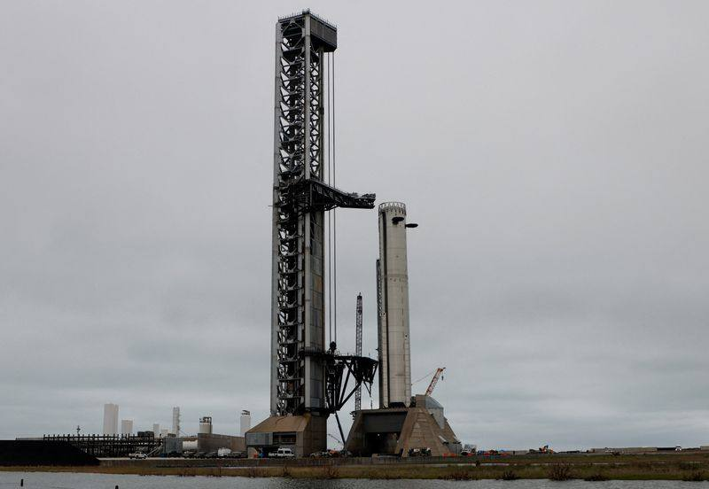

FAA Clears Starship Flight 15 for Historic Double-Catch Attempt
SpaceX secured its FAA launch license hours before the planned 22:45 UTC liftoff of Starship Flight 15 on November 13, 2026, clearing the final regulatory hurdle, Reuters reported (updated 20:34 UTC) and Scientific American independently confirmed. The 407-foot rocket's 15th flight is the first attempt to catch both stages at the Texas launch site: the Super Heavy booster returns about six and a half minutes after liftoff, and the upper-stage Starship deploys 26 next-generation Starlink satellites, circles Earth 14 times, and attempts its first-ever land catch about 22 hours later on Saturday afternoon. SpaceX has caught the booster three times before, most recently in March 2025. Dual-verified: Reuters read in full plus Scientific American read in full.

- 01THE CLEARANCE — SpaceX secured its launch license from the Federal Aviation Administration hours before the planned liftoff of Starship Flight 15, Reuters reported on November 13, 2026 (updated 20:34 UTC), clearing the final regulatory hurdle. Scientific American independently confirmed the FAA issued the necessary license on Friday afternoon, just hours ahead of the flight. As of Friday morning the license had not yet been issued, according to Reuters.
- 02THE FLIGHT PLAN — The 407-foot-tall (124 m) Starship rocket was scheduled to launch at 4:45 p.m. CT (22:45 UTC) on Friday, November 13, from Starbase, Texas, for its 15th flight since 2023 and the second carrying operational Starlink satellites. The Super Heavy booster is to return minutes after liftoff and be caught by the tower's mechanical arms; the upper-stage Starship is to deploy 26 next-generation Starlink satellites, circle Earth 14 times, and attempt its first-ever land catch about 22 hours after liftoff on Saturday afternoon.
- 03THE WATCHPOINT — Watch the liftoff at 22:45 UTC, the booster catch about six and a half minutes later, the Starlink deployment, and the upper-stage return about 22 hours after launch. SpaceX has caught the booster three times before, most recently in March 2025; Flight 14 reached orbit in September but ended early after an engine issue. Even a flawless double catch leaves the turnaround-speed test unanswered, which is what a weekly launch cadence requires.
WHAT HAPPENEDWhat Happened
SpaceX secured its launch license from the Federal Aviation Administration hours before the planned liftoff of Starship Flight 15, Reuters reported on November 13, 2026, clearing the final regulatory hurdle for the mission. Scientific American independently confirmed that the FAA issued the necessary license on Friday afternoon, just hours ahead of the flight. As of Friday morning the license had not yet been issued, according to Reuters, and the agency typically issues licenses a day before past Starship launches.
The 407-foot-tall (124 m) Starship rocket was scheduled to launch at 4:45 p.m. CT (22:45 UTC) on Friday, November 13, from SpaceX's Starbase facility in South Texas, for its 15th flight since 2023 and the second to carry a batch of operational Starlink satellites to orbit. The mission will attempt something no orbital rocket has done before: recovering both stages at the launch site. The Super Heavy booster is to fly back minutes after liftoff and be caught by the launch tower's mechanical arms, about six and a half minutes after launch; the upper-stage Starship is to deploy 26 next-generation Starlink satellites, circle Earth 14 times, and then return to Starbase for a first-ever catch of the orbiter itself, about 22 hours after liftoff on Saturday afternoon.
SpaceX has previously caught the Super Heavy booster three times with the tower's arms, most recently in March 2025. Flight 15 follows Flight 14 in September, which reached orbit and deployed operational Starlink satellites for the first time but ended early after an engine issue, with the upper stage splashing down intact in the Pacific Ocean. SpaceX has said a double catch would be a breakthrough moment in making Starship a reliable, rapidly reusable rocket, and Elon Musk has projected a roughly weekly launch cadence by the first half of 2027.
WHY IT MATTERSFull reusability is the whole bet
Starship's promise has always been full and rapid reusability, and Flight 15 is the first test of the complete version. Catching the booster alone proved the tower arms work; catching the orbiter after nearly a full day in space proves the vehicle can come home from orbit intact and, in principle, fly again. If both catches succeed, SpaceX will have shown the core loop its business case depends on: a rocket that returns in one piece instead of being discarded.
The mission is also a revenue flight, not only a test. It carries 26 next-generation Starlink satellites, and Starship is central to SpaceX's plan to expand the Starlink constellation and, further out, to loft large numbers of orbital data centers for artificial intelligence. The vehicle is likewise NASA's chosen moon lander under the Artemis program, which seeks to return US astronauts to the moon before the end of 2028; NASA has delivered roughly $3.2 billion toward Starship's development since 2021, and SpaceX has put at least $15 billion of its own funds into the program, according to Reuters.
WHAT TO WATCHThe license, the launch, and the two catches
The license removed the last regulatory obstacle, but the flight itself is the test. Watch the liftoff at 22:45 UTC, the booster catch about six and a half minutes later, the Starlink deployment, and the upper-stage return about 22 hours after launch on Saturday afternoon. A failure at any of those steps still leaves the program moving: Flight 14 also ended early, yet it reached orbit and deployed satellites. The longer test, even after a flawless double catch, is turnaround speed: SpaceX must show it can ready both stages for another flight quickly, which is what a weekly cadence requires.
Beyond Flight 15, the milestones that decide the moon timeline remain ahead, including in-space fuel transfer between Starship tankers, a process the lunar version needs for a round trip. SpaceX has said it could begin launching Starship from a new Florida pad by the end of 2026, and NASA's Artemis III mission, targeted for next summer, is set to rendezvous a Starship with an Orion spacecraft carrying four astronauts.
SIGNAL JUDGMENT — ANALYSISThe license was the last gate; the flight is the test
Tokenta Signal's judgment: The FAA license matters because it was the only thing standing between a historic attempt and a scrub, and its last-minute arrival shows how tight the regulatory margin ran. But a license is permission, not performance. Flight 15 has to do three hard things in sequence: launch cleanly, catch the booster minutes later, and then bring the orbiter home from orbit a day later. The first two are proven in part; the third has never been tried. Treat the clearance as the starting gun, not the result, and judge the mission on the catches.
WHAT REMAINS UNCERTAINWhat Remains Uncertain
EVIDENCEEvidence
Reuters, 'SpaceX to launch 15th Starship flight, seeking to achieve unprecedented round trip,' by Joey Roulette, published 2026-11-13T11:07:06Z and updated 2026-11-13T20:34:34Z, read in full. It reports that SpaceX secured its launch license from the Federal Aviation Administration hours before its planned liftoff, clearing the final regulatory hurdle; that the 407-foot-tall Starship was scheduled to launch at 4:45 p.m. CT (2245 GMT) for its 15th flight and the second carrying operational Starlink satellites; that the mission includes the first attempt to catch the upper-stage spacecraft on a return landing at the Texas launch site; and that the upper stage is expected to touch down about 22 hours after launch. Scientific American, 'Can SpaceX catch its Starship?' by Lee Billings, published November 13, 2026, read in full, independently reports that the FAA issued the necessary launch license on Friday afternoon, just hours ahead of the flight, and adds that the booster will attempt its return about six and a half minutes after liftoff and that Starship will deploy 26 next-generation Starlink satellites before its return about 22 hours later.
PRIMARY SOURCESPrimary Sources
- Reuters: SpaceX to launch 15th Starship flight, seeking to achieve unprecedented round trip
https://q106fm.com/2026/11/13/spacex-to-attempt-first-starship-spacecraft-recovery-on-land-in-15th-flight/ - Scientific American: Can SpaceX catch its Starship?
https://www.scientificamerican.com/article/can-spacex-catch-its-starship/
RELATEDRelated Intelligence
- Microsoft 365 Outage Fully Closed as Business and Exchange Incidents Marked Service Restored
- Microsoft 365 Consumer Incident Remediated as Email Backlog Clears; Business Outage Still Open
- FAA Lifts Nationwide Ground Stop After Four Hours; Officials Blame Aging Equipment, Rule Out Cyberattack
- FAA Grounds All U.S. Departures in First Nationwide Stop Since 2023; New AI Routing Tool Faces Scrutiny